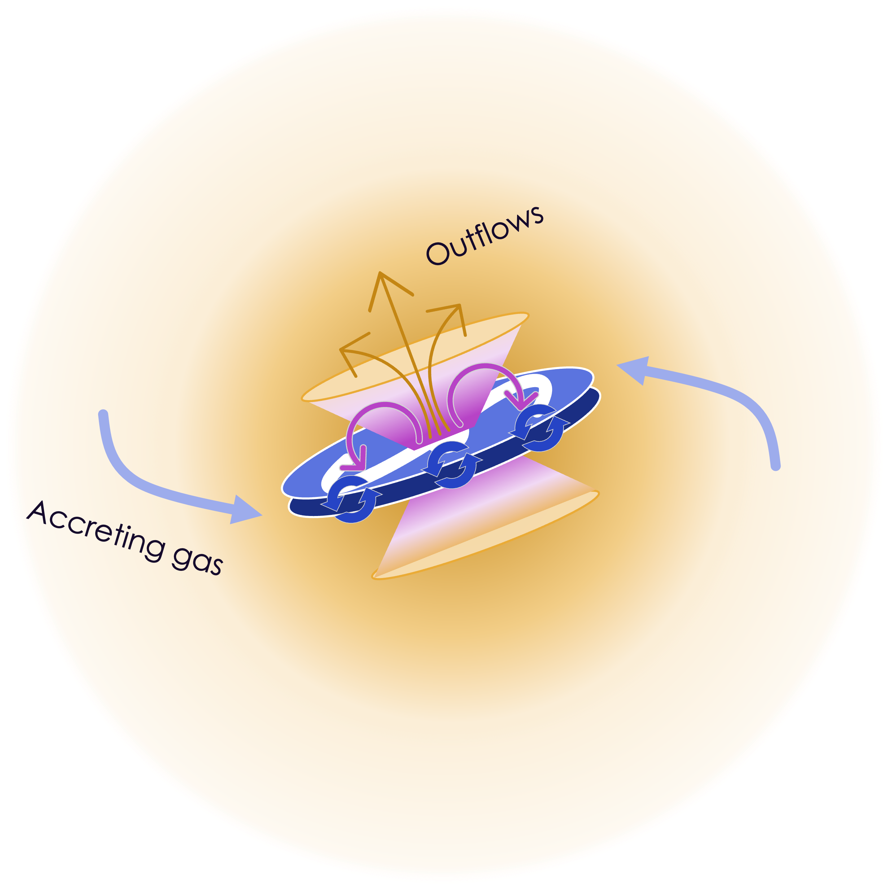
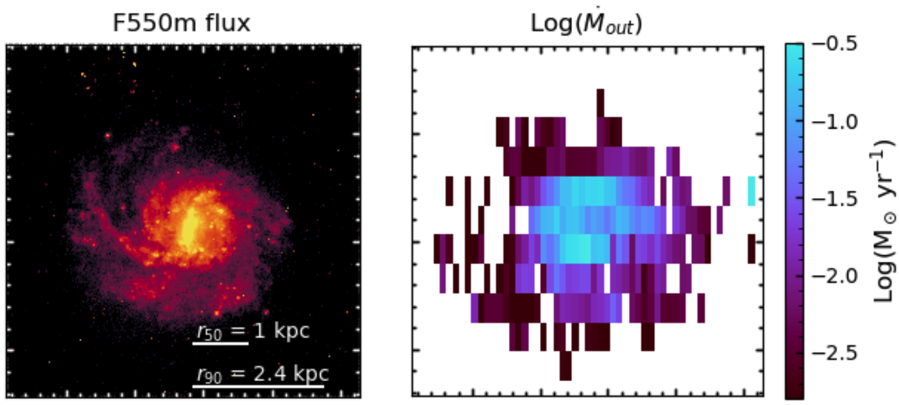
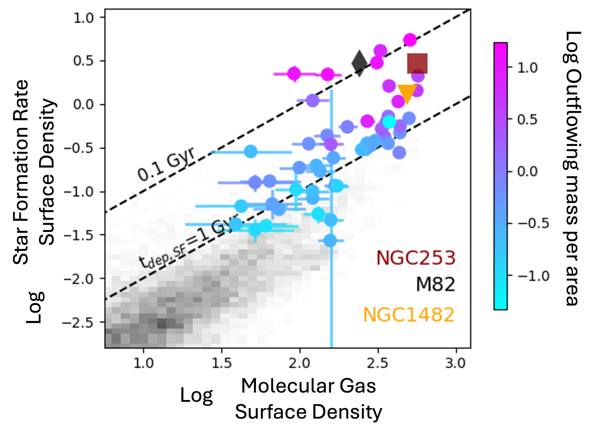
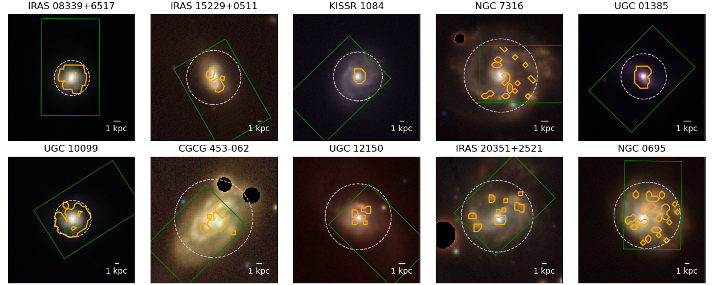

I use some of the largest optical telescopes on Earth to study how gas moves through galaxies, helping us understand how these galaxies have formed and evolved through cosmic time. The key question I am trying to answer is: how do stars influence the gas around them, and what does that mean for the formation of future stars? Does this change over cosmic time?
To answer this question, I use 3D data from a type of instrument called an Integral Field Spectrograph (IFU) to trace gas being blown out of galaxies and connect it back to the underlying star formation. I also use high-resolution images to pick out individual massive stars and star clusters, studying their impact on the surrounding gas. While my main focus is on optical observations, I have an interest in combining multi-wavelength observations to get a clearer picture of all phases of gas in galaxies. Recently, I applied my knowledge of astronomy to build a system for processing images to help track and monitor satellites.
Stellar feedback occurs when massive stars release energy in the form of winds, radiation and supernovae explosions, which stir up the surrounding gas and slow down further star formation. This process helps regulate how stars are born. In fact, simulations of galaxies can't accurately replicate key galaxy features - like galaxy mass, size, and star formation rates - unless they include stellar feedback. However, understanding the physics behind stellar feedback is challenging because it happens on a huge range of scales - from the area around individual stars to massive winds that affect entire galaxies.
To study stellar feedback, I use data from the DUVET sample, which looks at starbursting disk galaxies. These are galaxies that are undergoing intense star formation. The DUVET sample uses observations taken with the IFU instrument KCWI on the Keck Telescope in Hawaii to track galaxy winds driven by star formation. These winds, caused by the radiation from young massive stars and supernova explosions, push gas and dust out of the galaxy, creating turbulence and regulating star formation. If the wind is powerful enough, it can escape the galaxy altogether and contribute gas to the area around the galaxy, known as the circumgalactic medium (CGM).
Understanding these processes is crucial, especially in starbursting environments, since these are the type of environments where the majority of stars in the universe were created. However, the physical parameters regulating outflows and stellar feedback generally are not yet fully understood.
Read about how:
we resolved outflow properties in a starburst galaxy here,
we compared that to the molecular gas in the galaxy for the first time and tracked how outflows regulate star formation here,
and how we extended our results to include 10 nearby galaxies to make scaling relations here.
If you're looking for the full results table for our outflow scaling relations, download it here (~200 KB).

A cartoon of the baryon cycle, where gas is accreted onto a galaxy and becomes fuel for the star formation which then drives an outflow. The outflow can contribute gas back to the galaxy itself, and also put gas into the circumgalactic medium, which surrounds the galaxy.

IRAS 08339+6517 is a starbursting ring galaxy in the nearby Universe. Left is an image of the galaxy taken by the Hubble Space Telescope. Right is a map of the outflowing gas across the galaxy, coloured by the rate at which mass is flowing out.
Outflows cover the whole disk in a starbursting galaxy
I studied a face-on starbursting disk galaxy in our local Universe (IRAS 08339+6517) using observations taken with the KCWI instrument on the Keck Telescope as part of the DUVET sample. Using KCWI means that we could get spatially resolved observations (about 500pc) and search for outflows across the entire face of the galaxy. To identify outflows I developed an automated method (nicknamed Koffee) to systematically determine whether a double Gaussian fit was needed. I found evidence for outflows in nearly every part of the galaxy, with 70% of the galaxy driving outflows within a radius containing 90% of the galaxy light.
The relationship between the star formation rate surface density and the outflow velocity has historically been used to observationally distinguish between different models of how star formation drives outflows in galaxy simulations. Two main models are "energy-driven" and "momentum-driven" feedback:
Energy-driven models assume the outflowing gas and turbulence within the ISM are driven by mechanical energy from supernovae. The outflow velocity depends shallowly on the star formation activity within the galaxy (Chen et al. 2010, Kim et al. 2020).
Momentum-driven feedback models drive outflows and turbulence through radiative pressure from young massive stars. These models have a steeper dependence of the outflow velocity on star formation activity (Murray et al. 2011).
In the case of the galaxy IRAS 08339+6517, I found that the outflow velocity plotted against the SFR surface density had a shallow slope, matching the predictions from the energy-driven wind model. This result is an important step towards understanding how stellar feedback depends on the star formation happening in a galaxy.
How do outflows regulate star formation in galaxies?
We wanted to know how the gas outflows driven by star formation contribute to slowing down the star formation. So we took our optical data from the instrument KCWI on the Keck Telescope, which traces the ionised (warm) gas in the galaxy, and compared it to data from NOEMA, which looks at the cold gas in the galaxy. Cold gas is the fuel for star formation, and the warm gas shows us where the outflows are. This is the first time we have been able to look at a spatially resolved galaxy and compare the outflow mass rate directly to the star formation rate and molecular gas content of the galaxy (the Kennicutt-Schmidt relation).
We found a clear link between the rate at which gas is being pushed out of the galaxy (the mass outflow rate) and the star formation rate. We saw that the mass of gas being blown out increases as the star formation rate increases. We also discovered a strong connection between the outflow rate and the time it takes for the cold gas to be used up in forming stars in the galaxy (the depletion time).
These outflows are what we call "breakout" outflows, which means that they are strong enough to break out of the galaxy disk. We confirmed this by looking at the gas content and the motion of stars and gas in the galaxy disk. Our data suggests that in the areas of the galaxy with the highest star formation rates, more gas is being blown out than is being turned into new stars. Since the outflows breakout of the disk, this gas may take a while to return to the galaxy. This means that the outflows are actually limiting how fast the galaxy can make new stars by removing the gas it would use as fuel to form them.

The spatially resolved star formation rate per area (y-axis) plotted against the molecular gas per area (x-axis). This is known as the Kennicutt-Schmidt relation, or the star formation law. The dotted lines show where it takes 0.1 Gyr (100 million years) and 1 Gyr (1,000,000,000 years) to turn molecular gas into stars. When it takes a short time, we say the galaxy is starbursting. Each point is coloured by the mass outflow rate per area. This is the first time we have been able to do this!

Ten galaxies from the DUVET sample that are face-on. The orange contours show where we found evidence of outflowing gas. The green box shows the field of view of our KCWI data. The background three-colour image comes from a combination of the z-, r-, and g-bands from the Pan-STARRS survey.
How do outflow properties relate to star formation in starburst galaxies?
We looked at spatially resolved data from 10 galaxies in the DUVET sample, using observations from KCWI, an instrument on the Keck Telescope. Our goal was to understand how outflows (gas being pushed out of galaxies) are connected to the rate at which stars are forming, and the amount of stellar mass in these galaxies. We measured about 500 lines-of-sight that show outflows, and used this data to explore how the outflow velocity, outflow mass flux (the amount of mass flowing out per area), and the mass-loading factor (the mass outflow rate divided by the star formation) relate to the star formation rate (SFR) and the stellar mass surface density.
We found that the more intense the star formation, and the more stars in an area, the more gas is being pushed out. We also found that the specific star formation rate (the amount of stars being formed compared to the stellar mass in the area) is a better predictor of where we might observe outflows than using a star formation rate surface density cutoff.
Our results suggest that supernovae, which happen when massive stars die, are the main drivers of the outflows. We also created a series of "scaling relations" that compare resolved outflow properties (like the velocity and mass out) to the resolved galaxy properties in the same location (like the star formation and stellar mass). These scaling relations can be compared to data from galaxies at higher redshift using JWST, and also to predictions from simulations. This research helps provide a clearer picture of how gas outflows influence galaxy evolution.
Scaling relations from the 10 DUVET galaxies. Top row is the outflow velocity measured from Hβ and [OIII]λ5007, and the outflow mass rate per area plotted against the star formation rate per area. The bottom row is the outflow velocity measured from Hβ, the mass loading factor (mass outflow rate divided by star formation rate), and the outflow mass rate per area plotted agains the stellar mass per area. For more details, see the paper.
MRes Thesis: Variations in the IMF
The stellar initial mass function (IMF) describes the original distribution of stellar masses in a stellar population. The IMF is critical in our understanding of galaxy evolution over cosmic time. My thesis presented preliminary results from the Fornax3D survey using the MUSE integral field spectrograph. I compared two techniques for finding the IMF in the lenticular galaxy FCC167: full spectral fitting, and a more constrained approach focusing on a few key features. While the two methods agree reasonably well on radial variations for the age and abundance parameters, the derived IMF shape and its variation within the galaxy differ. You can find my Masters Thesis here.
Undergraduate Projects
As an undergraduate I worked on two separate projects with Dr. Lee Spitler. The first project involved cataloguing supermassive black holes at the centre of galaxies with a redshift greater than 3.0 using multi-wavelength catalogues.
For the second project, I worked on the Huntsman Telephoto Eye (now the Huntsman Telescope) developing the initial pipeline to reduce data, combining exposures with different exposure times into a single image. During the project, I travelled to Siding Springs for an initial test observation run using the first telephoto lens acquired for the array. Below, you can see our team observing with Huntsman, a picture of the first Huntsman lens (a Canon telephoto lens), and the image of NGC 300 we took while observing. This took 500 minutes!
ASTRO 3D Science Meeting 2023, Fremantle, WA, Australia
ASTRO 3D Science Meeting 2022
ASTRO 3D ECR Astronomers in Australia Seminar Series 2021
ASTRO 3D Virtual Science Meeting 2021
I won the Presentation Award for Best use of Slides for this talk.
KITP Fundamentals of Gaseous Halos 2021
Keck Science Meeting 2020
About Me
I enjoy travelling and going on adventures with my husband. We've travelled together to New Zealand, Vietnam, Thailand and through parts of South America. Now that we're based in the UK, we're exploring the UK and Europe. And there's always more to see in my home country Australia!
Some other things I enjoy are reading books, ice skating, singing, hiking, and doing sudokus.